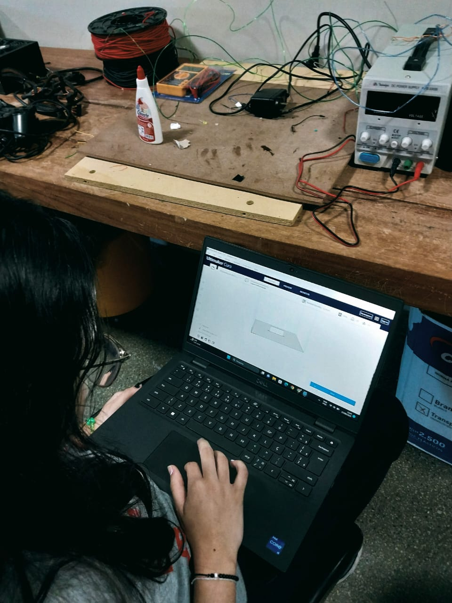

Este projeto visou criar um site, que auxiliará um deficiente visual a se locomover em ambientes urbanos.
O objetivo do nosso site é fazer com que as pessoas com deficiência visual possam se deslocar para os lugares que desejam com o apoio do GPS, que sinalizaria os locais (pontos de ônibus, cruzamentos, etc). Também poderia ser utilizado um fone de ouvido para escutar a nossa assistente virtual, nossa guia e mentora para melhorar a acústica, isolando o som ambiente que poderia atrapalhar o foco, dando maior suporte
para quem tem algum grau de deficiência visual O protótipo vai funcionar da seguinte forma, ele vai ser implantado nos pontos de ônibus para pessoas com PCD (Pessoas com deficiências), possam saber que nesse local estará localizado um ponto de ônibus e, vai mostrar também quais são as linhas que passarão naquele ponto de ônibus